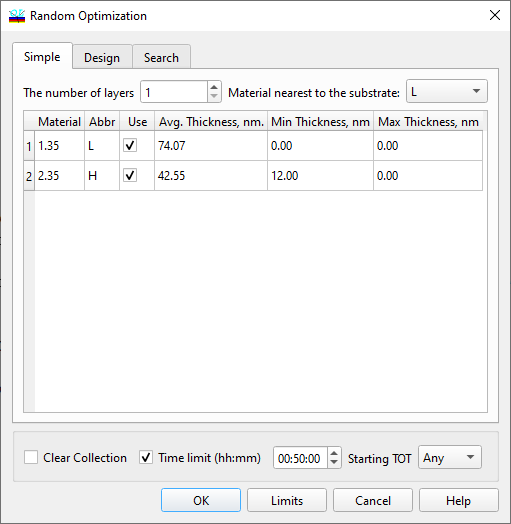
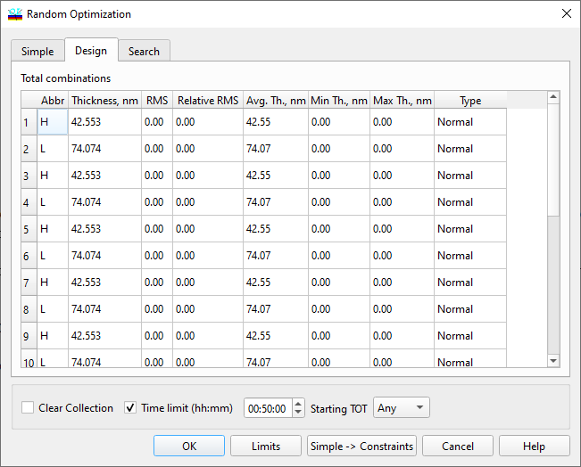

Setting Random Optimization Parameters
Setting Random Optimization Parameters
Navigation: OptiLayer Menu Commands > Synthesis Menu > Random Optimization >
Setting Random Optimization Parameters
` <idh_random_optimization.html>`__ ` <idh_random_optimization.html>`__ ` <exhaustive_search_option.html>`__
This dialog appears when OptiLayer is requested to run Random Optimization.
There are two modes of Random Optimization. The first mode is called Simple:

Simple mode corresponds to the first tab of the Random Optimization Parameters dialog. Enter the number of layers you wish to have in a random starting design, select at least 2 materials that should be used in it, and the average value of thicknesses of layers for each of the selected materials. Additionally, it is necessary to select a material that will be placed next to the substrate in random starting designs. Please note that this material should also be selected in the spreadsheet. It is also possible to specify minimum and maximum limits for layer thicknesses, as this can significantly improve the quality of solutions and computational performance. In Simple mode, random starting designs are generated inside a specified constrained domain, and subsequent local optimization procedures are also performed while taking into account the specified limits for layer thicknesses. The “Clear Collection” selection allows clearing the Collection automatically when restarting the Random Optimization procedure. The Design mode of Random Optimization can be selected with the second tab of the Random Optimization Parameters dialog.

In the Design mode search area of the Random Optimization is specified as some vicinity of the loaded design. It is possible to specify RMS or Relative RMS for each layer thickness. It is also possible to select the type of the random generator that will be used for obtaining layer thickness deviation of the starting designs in the course of the Random Optimization procedure. The type of random values can be Uniform, Normal, or Fixed.
In the case of Uniform distribution, RMS columns specify an absolute or relative interval for the uniform random numbers.
In the case of Normal distribution, RMS columns specify absolute or relative RMS values for the Normal distribution.
In the case of Fixed selection, the value of the layer thickness remains unchanged.

Note 1: Layers with Fixed status are fixed at the beginning of the refinement and released for optimization in the next step. This improvement allows for a more concentrated search around the selected design, as the thicknesses of fixed layers do not change significantly during the Random Optimization procedure.

Note 2: RMS value specifies how big the deviations could be from the current design thickness. With a higher value, you extend the size of the search area and increase the chances of finding another good minimum. However, if the size is too big, the number of attempts required to find something good increases dramatically. There exists a golden middle RMS value specific to each problem that needs to be experimented with. If the initial minimum is obtained too often, increase the RMS values. If it is obtained very rarely or never, then the RMS values are already too big.
The Starting TOT option allows you to select a starting value of the total optical thicknesses (TOT) for random designs to better concentrate random optimization around expected or desired values. When Any is selected, this option is not active. Selection of Design will set the TOT of generated random designs to be equal to the TOT of the current design. Selection of Value allows you to enter the desired starting TOT value explicitly in numerical form.
Simply -> Constraints button in Simple mode allows you to set initial settings for the Design mode according to the settings on the Simple tab. This is a convenient operation since Simple mode is usually used at the very first step of the design procedure.
The Limits… button opens an additional Limits Generator dialog to invoke the recalculation of upper and lower constraints for layer thicknesses (Th.Min and Th.Max columns).
Press OK to start Random Optimization. The progress of the optimization is displayed in the Refinement window.

Note: The random optimization procedure will run infinitely if the Time Limit is not set and should be terminated by the user when enough promising designs are collected in the Collection window.